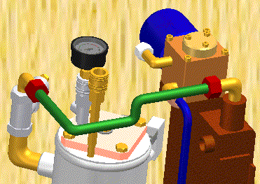
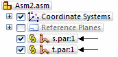

Tube design workflow
Tube design overview
You can use XpresRoute to create path segments and tubes in an assembly. To access the commands for tubing, while in Assembly, choose Tools tab→Environs group→XpresRoute  .
.

Tube parts are designed in the context of an assembly, so you can directly model them within an assembly, using existing part and assembly geometry to ensure accurate fit and function.
The tube parts are linked to the assembly file.

Tube parts are fully associative and update with the parts to which they are connected. Tube wire parts are directed parts. They conform to the path segment and the options you use to construct the part. When you make changes to the assembly that cause the path to change, the part will also change.
Tube design workflow
Create a path
Use the PathXpres command to automatically create a 3D path for the tube.
To learn how, see Create a tube path with PathXpres.
Use the Line Segment or Arc Segment command to manually draw the path for the tube.
To learn how, see Create a tube path.
Create the tube
Use the Tube command to assign pipe attributes and fittings to a path segment that defines the route the pipe should follow.
To learn how, see Create a tube.
Tube center lines can be displayed and used for dimensioning using the Show/Hide Component Center Line command. Center lines can also be shown on drawing sheets in the draft environment.
Learn how to use XpresRoute for tubing by watching the following video.